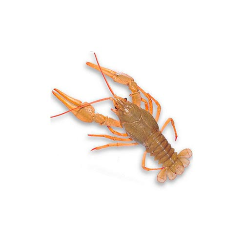

Найсмачніші раки харкова тільки у нас
Адресса:
23 серпня 32/20 Харків, Харківська область.-

Рак дрібний
ціна
+380675462727 -
Рак стандарт
ціна
+380675462727 -
Варенні Раки
ціна
+380675462727 -
Річковий
ціна
+380675462727 -
Морсьий
ціна
+380675462727 -
Підводний
ціна
+380675462727
Наша рибка – живые и вареные раки на любой вкус
Раки считаются наиболее подходящей и вкусной закуской к холодному пиву. Особенно приятно ими наслаждаться летом. Такой продукт, отваренный с приправами или запеченный на огне, обязательно порадует вас и друзей неповторимой оригинальностью, отменным запахом и приятным видом. Поэтому, если вам надоело однообразие и приевшиеся закуски по типу сухарей или чипсов, если вы предпочитаете натуральную пищу и приятное проведение времени с близкими – самое время купить раки Харьков.
В последнее время многие решаются попробовать традиционные или необычные блюда, основой которых являются раки. Что ж, тогда вы точно обратились по адресу. В нашем интернет-магазине любой желающий сможет приобрести как живых (которые впоследствии вы самостоятельно приготовите), но и вареных раков по уникальным методам. В наличии имеются продукты любого размера. Речь идет о мелких, средних и крупных товарах.
Домохозяйкам, которые предпочитают готовить сами, мы предлагаем приобрести живых рачков. Заказ товара осуществляется исключительно из экологически чистых территорий, у надежных поставщиков и в добросовестных компаниях. Оперативная доставка раков позволит вам получить товар максимально быстро и по адекватной стоимости. Фактически, вы наделяете себя возможностью отведать столь чудесный деликатес абсолютно в любое время.
На сайте вы можете видеть, что мы предлагаем совершенно разные варианты приготовления: в разливном темном пиве, соевом соусе, живом непастеризованом квасе. У вас есть возможность выбора большого количества методов приготовления, каждый из которых отличается своим взыскательным вкусом. Наши специалисты стараются оправдывать ожидания настоящих гурманов.